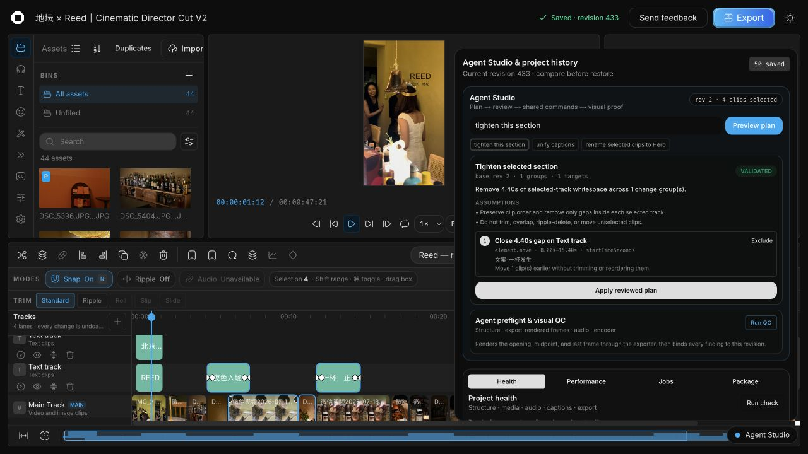
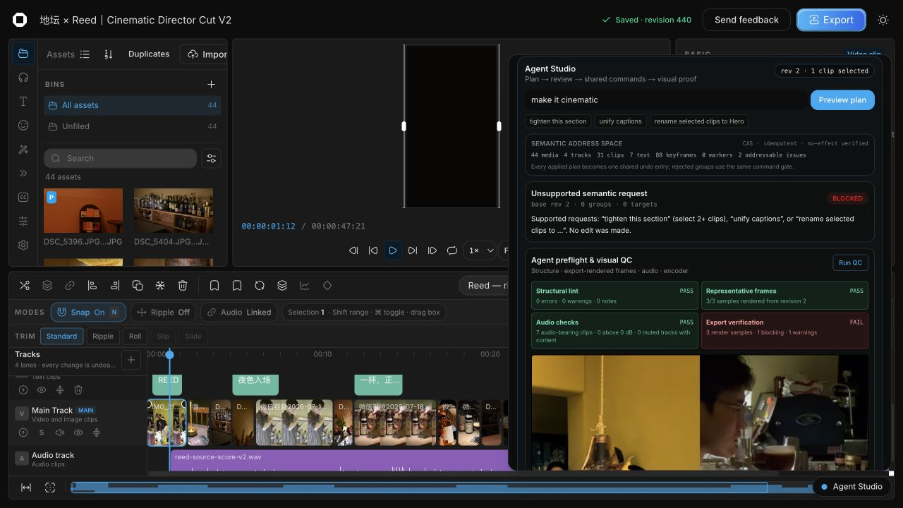
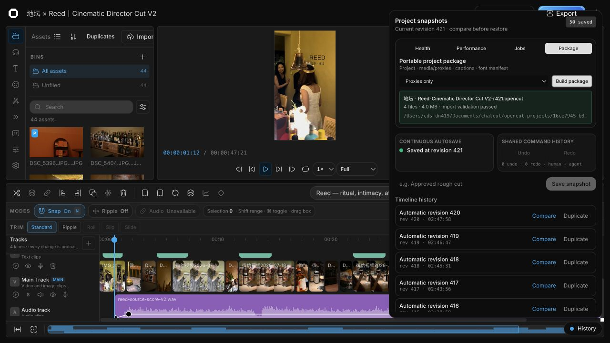

打开素材
进入已有工程或导入素材，画面与轨道立即可见。
REAL PRODUCT · REAL PROJECT · 2026-08-02
不是 Agent 生成完再交给人，而是素材理解、时间线修改、人工精修、实时预览和本地导出始终发生在同一个 Moirai Cut 工程。

进入已有工程或导入素材，画面与轨道立即可见。
点击一次，不需要知道 MCP 或 Skill 语法。
识别画面和声音，原子写入当前共享工程。
拖动、裁切、改参数、撤销，Agent 读取最新 revision。
结构检查、代表帧复核，生成本地 draft。
$moirai-cut-create读取当前工程与用户选择，建立 Agent 可读素材 JSON，场景识别、声音分析、原子编排、质检、同步并导出审阅版。
doctor 100/100Skill 已发现7 模型3 工具档位


| 优先级 | 缺口 | 为什么重要 |
|---|---|---|
| P0 | 干净环境的 API Key 兜底、Claude/其他 Agent Skill 发现、真实点击导出验收 | 决定没有本地 Codex 环境的新用户能否第一次就成功。 |
| P1 | “保存为 Skill”编辑器、可恢复任务中心、带时间码的预览批注、创作 brief 模板 | 把一次成功对话变成稳定、可测试、可复用的创作流程。 |
| P2 | Skill 权限与版本、素材权利字段、匿名创作质量评测、一键问题包 | 让开源生态可治理、可合规、可回归。 |